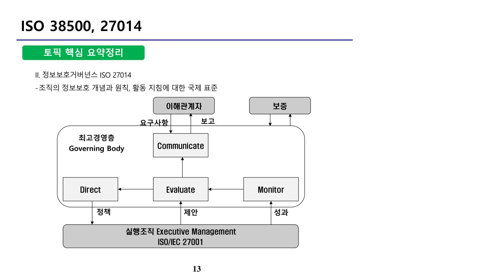

1. PIMS (원본 p.1-11)
PIMS(Personal Information Management System, 개인정보보호 관리체계 인증)는 기업이 개인정보 보호 활동을 체계적·지속적으로 수행하기 위해 필요한 보호조치 체계를 구축하였는지 점검하여 일정 수준 이상의 기업에 인증을 부여하는 제도다. 개인정보보호 관리체계 제공을 통한 개인정보 침해 가능성 최소화, 개인정보를 안전하게 관리하는 기업정보 제공, 국내 기업의 내부정보 및 국부의 해외 유출 방지를 기대효과로 한다.
가. PIMS·PIPL 통합 연혁
| 구분 | 통합 전(PIPL) | 통합 전(PIMS) | 통합 후 |
|---|---|---|---|
| 인증명 | PIPL(개인정보보호인증) | PIMS(개인정보관리체계인증) | PIMS(개인정보관리체계인증) |
| 인증대상 | 모든 개인정보처리자(정보통신서비스 제공자 제외) | 정보통신서비스 제공자 | 모든 개인정보처리자 |
| 평가항목 | 65개 | 124개 | 86개 |
| 수행기관 | NIA(행정자치부) | KISA(방송통신위원회) | KISA(행정자치부, 방송통신위원회) |
| 근거법률 | 개인정보보호법 제13조 제3호 | 정보통신망법 제47조의3 | 개인정보보호법 제13조 제3호, 정보통신망법 제47조의3 |
| 도입시기 | 2013년 11월 | 2011년 11월 | 2016년 1월 |
나. 인증 심사 항목 구성
PIMS 인증 심사 항목은 크게 세 분야로 구성된다: 관리과정(정책수립, 범위설정, 위험관리, 구현, 사후관리), 보호대책(개인정보보호정책, 개인정보보호조직, 개인정보 분류, 교육 및 훈련, 인적보안, 침해사고처리 및 대응절차, 기술적 보호조치, 물리적 보호조치, 내부검토 및 감사), 생명주기(수집, 이용 및 제공, 관리 및 파기). 각 분야·세부분야별로 통제목적 수, 통제사항 수, 점검항목 수(필수/선택)와 법률근거가 매핑되어 있다.
다. 인증 절차
인증기관은 신청기관으로부터 심사 신청을 받고 인증심사팀을 구성하여 심사를 시행한 뒤, 그 결과를 인증위원회에 의결 요청한다. 절차는 다음 순서로 진행된다: ① 심사신청 → ② 예비점검 및 계약 → ③ 심사팀 구성 → ④ 인증심사 → ⑤ 보완조치 → ⑥ 심사결과 보고서 제출 → ⑦ 인증심사결과 심의·의결요청(최초/갱신) → ⑧ 의결결과 통보 → ⑨ 인증서 발급.
PIMS는 조직의 전반적인 경영을 위한 관리구조의 한 부분으로서, 조직의 사업목적 달성을 방해하는 위험(개인정보자산이 비인가자에게 노출되는 기밀성 위험, 비인가자에 의해 변경·훼손되는 무결성 위험, 기술적·관리적·물리적 보호조치 또는 법률적 사항을 지키지 못하는 준거성 위험)을 관리해야 한다. 중소기업이 인증 신청 시 필수 적용 기준에는 관리계획 수립·책임자 검토, 구성원 책임·역할·권한 정의, 위험관리 계획 수립·보호대책 수립이 포함되지만, 개인정보 자산의 가치·위험을 고려한 잠재적 손실 영향의 정밀한 식별·분석까지는 중소기업 필수 기준으로 요구되지 않는다.
2. ISO 38500, 27014 (원본 p.12-18)
가. IT 거버넌스 국제표준 ISO/IEC 38500
ISO/IEC 38500은 조직의 IT 활동을 평가(Evaluate)·지휘(Direct)·모니터링(Monitor)하기 위한 IT 거버넌스 구현 원칙 프레임워크를 제시하는 국제 표준으로, 이해관계자들이 확인할 수 있는 평가 기반의 정보와 지침을 제공한다. 6가지 원칙은 다음과 같다.
| 원칙 | 설명 |
|---|---|
| 책임(Responsibility) | 조직원은 주어진 책임을 이해하고 수락하며, 책임 없는 권한 부여를 방지 |
| 전략(Strategy) | 현재와 미래의 역량·요구를 고려하여 IT전략과 비즈니스 전략을 연계 |
| 획득(Acquisition) | IT 구매는 투명한 의사결정을 통해 이루어져야 함 |
| 성과(Performance) | 조직을 지원하는 목적에 부합하도록 현재 및 미래의 비즈니스 요구사항을 충족시키는 데 필요한 서비스·서비스 수준·서비스 품질을 제공 |
| 준거(Conformance) | 강제적인 법과 규제사항 준수 |
| 행동(Human Behavior) | IT 정책은 인간적인 요구와 행동 요인을 존중 |
나. 정보보호거버넌스 ISO/IEC 27014
ISO/IEC 27014는 조직 내에서 정보보호와 관련된 활동을 평가·지시·감독·소통할 수 있도록 정보보호거버넌스에 대한 개념과 원칙을 지침으로 제공하는 국제표준이다. 최고경영층(Governing Body)이 이해관계자의 요구사항을 받아 Evaluate(평가)·Direct(지휘)·Monitor(모니터링)를 수행하고 그 결과를 Communicate(소통)를 통해 이해관계자에게 보고하며, 실행조직(Executive Management, ISO/IEC 27001 기반)에는 정책을 지시하고 그로부터 제안·성과를 받는 순환 구조를 갖는다.

ISO/IEC 27014가 명시하는 정보보호 거버넌스 원칙에는 현업부서를 포함하는 전사적 보안 구현, 긍정적 보안문화 형성, 정보보호 투자에 대한 방향 설정 등이 포함되나, "효율적 보안운영을 위한 계획 수립" 자체는 원칙이 아니라 실행 단계의 활동에 해당한다. 프로세스 4단계 중 Evaluate는 정보보호 활동의 조직 목표 지원 여부를 평가하고, Direct는 최고경영층이 정보보호 목표·전략의 방향을 제시하며, Monitor는 비즈니스 관점의 성과척도로 모니터링한다. "최고경영층이 정보보호 활동의 적절성을 외부 이해관계자에게 보고"하는 것은 Assure가 아니라 Communicate 프로세스의 역할이다(ISO 27014의 4대 프로세스는 Evaluate·Direct·Monitor·Communicate이며 Assure는 별도 프로세스명이 아니다).
3. 개인정보보호법 (원본 p.19-47)
가. 개인정보의 정의 및 다른 법률과의 관계
개인정보란 살아 있는 개인에 관한 정보로서 성명·주민등록번호 및 영상 등을 통해 개인을 알아볼 수 있는 정보를 말하며, 해당 정보만으로는 특정 개인을 알아볼 수 없더라도 다른 정보와 쉽게 결합하여 알아볼 수 있는 것을 포함한다. 개인정보 보호에 관해 다른 법률에 특별한 규정(개별법)이 있는 경우를 제외하고는 개인정보보호법을 따르는데, 이는 법규 체계상 특별법 우선의 원칙이 적용됨을 의미한다 — 즉 신용정보보호법 등 개별법이 존재하면 개인정보보호법이 아니라 개별법이 우선 적용된다.
나. 개인정보 보호원칙(제3조) — OECD 프라이버시 8원칙 대응
| OECD 프라이버시 8원칙 | 개인정보 보호원칙(제3조) 대응 내용 |
|---|---|
| 수집제한의 원칙(1원칙) | 목적에 필요한 최소정보의 수집(제1항), 사생활 침해 최소화 처리(제6항), 익명처리의 원칙(제7항) |
| 정보 정확성의 원칙(2원칙) | 처리목적 내에서 정확성·완전성·최신성 보장(제3항) |
| 목적 명확화의 원칙(3원칙) | 처리목적의 명확화(제1항) |
| 이용제한의 원칙(4원칙) | 목적 범위 내에서 적법하게 처리, 목적 외 활용 금지(제2항) |
| 안전성 확보의 원칙(5원칙) | 권리침해 가능성 등을 고려하여 안전하게 관리(제4항) |
| 처리방침 공개의 원칙(6원칙) | 개인정보 처리방침 등 공개(제5항) |
| 정보주체 참여의 원칙(7원칙) | 열람청구권 등 정보주체의 권리보장(제5항) |
| 책임의 원칙(8원칙) | 개인정보처리자의 책임준수, 신뢰확보 노력(제8항) |
다. 개인정보의 수집·이용 및 동의
개인정보처리자는 다음 중 하나에 해당하는 경우 개인정보를 수집·이용할 수 있다: 1) 정보주체의 동의를 받은 경우, 2) 법률에 특별한 규정이 있거나 법령상 의무 준수를 위해 불가피한 경우, 3) 공공기관이 소관 업무 수행을 위해 불가피한 경우, 4) 정보주체와의 계약 체결·이행을 위해 불가피한 경우, 5) 정보주체 또는 법정대리인의 의사표시가 불가능한 상태에서 급박한 생명·신체·재산의 이익을 위해 필요한 경우, 6) 개인정보처리자의 정당한 이익 달성을 위해 필요하고 정보주체의 권리보다 명백히 우선하는 경우.
동의를 받을 때 정보주체에게 알려야 하는 사항(제15조 등)은 개인정보의 수집·이용 목적, 수집하려는 개인정보의 항목, 개인정보의 보유 및 이용 기간, 동의를 거부할 권리가 있다는 사실 및 그 불이익 내용이다. 이 중 "동의를 거부할 권리가 있다는 사실"은 개인정보보호법에만 명시되어 있으며, 정보통신망법에는 수집·이용 목적·항목·보유기간만 공통으로 규정되어 있어 두 법에 공통으로 정의된 사항이 아니다.
병원 진료기록부 작성이나 기업의 직원 채용 단계에서 성명·주소·학력 등을 수집하는 경우는 계약 체결·이행 등을 위해 불가피한 경우로서 별도의 본인 동의 없이도 처리할 수 있는 반면, 직원 가족의 복리후생을 위해 가족 개개인의 주민등록번호 등을 수집하는 경우와 보험회사가 자동차보험 진료수가 청구를 위해 의료기관에 진료기록 열람·사본교부를 청구하는 경우는 원칙적으로 정보주체 본인의 동의가 필요하다.
라. 개인정보의 암호화
개인정보보호법상 암호화 의무 대상은 비밀번호·고유식별정보(주민등록번호 등)·바이오정보이며, 신용카드정보는 이 목록에 직접 포함되지 않는다. 암호화 방식에서도 차이가 있는데, 비밀번호는 저장 시 복호화가 불가능한 단방향(일방향) 암호화가 적용되는 반면, 신용카드번호·계좌번호·주민등록번호 등 고유식별정보는 필요시 복호화가 가능한 양방향 암호화가 적용된다는 점이 대표적인 오답 포인트다.
마. 개인정보 영향평가
영향평가는 개인정보파일의 운용으로 인해 정보주체의 개인정보 침해가 우려되는 경우, 위험요인 분석과 개선사항 도출을 위한 평가를 시행하고 그 결과를 행정자치부장관에게 제출하는 제도다(법 제33조). 시행령 제35조에 따른 수행 대상은 다음과 같다: 1) 5만명 이상의 정보주체에 관한 민감정보·고유식별정보 처리가 수반되는 개인정보파일 구축·운용·변경, 2) 기존 개인정보파일과 연계한 결과 50만명 이상의 정보주체 정보가 포함되는 경우, 3) 100만명 이상의 정보주체에 관한 개인정보파일 구축·운용·변경, 4) 영향평가를 받은 후 개인정보파일 운용체계를 변경하는 경우(변경된 부분에 한정).
영향평가의 주요 활동은 국내 법 제도 요구사항 준수를 위한 프로세스 구축, 개인정보 수집·이용·보관·파기 라이프사이클 분석, 위험평가를 통한 부정적 영향도 평가 등이며, 궁극적 목적은 개인정보 침해사고를 사전에 예방하는 데 있다 — "개인정보보호 관리수준에 대한 객관적 평가와 개선 유도로 관리수준을 향상시키는 것" 자체를 궁극 목적으로 서술하는 것은 초점이 다른 오답이다.
바. 개인정보보호법의 규정 범위와 유사 제도 비교
개인정보보호법은 개인정보의 수집 제한(제16조), 목적 외 이용·제공 제한(제18조), 개인정보영향평가(제33조) 등을 규정하고 있으나, "개인정보 이용내역의 통지"는 개인정보보호법에서 별도로 규정하고 있는 항목이 아니다. 한편 '정보통신망 이용촉진 및 정보보호 등에 관한 법률'을 근거로 수행되는 제도로는 정보보호 사전점검(제45조의2)과 정보보호관리체계 인증(제47조, ISMS)이 있으며, 개인정보 영향평가는 개인정보보호법, 정보통신기반시설 보호대책 수립은 정보통신기반시설보호법을 근거로 한다는 점에서 구분된다.
사. 국가사이버안전관리규정 — 사이버위기경보 단계
국가사이버안전센터가 정의한 사이버위기경보는 관심→주의→경계→심각의 4단계로 구분된다. "복수의 정보통신서비스 제공자(ISP)망 및 기간망의 장애 또는 마비"는 경계 단계에 해당하며, "국가적 차원에서 네트워크·정보시스템 사용이 불가능"한 상황은 최고 단계인 심각, "침해사고가 일부 기관에서 발생해 다수기관 확산 가능성이 증가"하는 상황은 주의, "해외 사이버공격 피해가 확산되어 국내 유입 우려가 존재"하는 상황은 관심 단계에 해당한다.
아. 정보보호 정책서
정보보호 정책은 조직의 정보보호 프로그램을 수행하는 데 가장 기본적인 문서이며 계속 수정·보완해야 하는 'live document'다. 정책서는 정보보호 관련 주요 의사결정을 문서화한 것으로, 조직 전반에 적용되는 프로그램 성격을 가지며 때로는 바이러스와 같은 특정 이슈에 대한 정책서를 별도로 작성하기도 한다. 정책서에는 "무엇을 할 것인가"에 대한 의사결정 내용이 포함되며, 지속적으로 수정·보완되는 문서라 하더라도 최고경영자의 승인은 반드시 필요하다 — "승인이 필요 없다"는 서술은 대표적인 오답이다.
[참고] 개인정보보호법 및 PIMS 관련 부가 체계
| 구분 | 주요 내용 |
|---|---|
| 개인정보보호법 제1장 총칙 | 목적, 정의, 개인정보보호원칙, 정보주체의 권리, 국가 등의 책무, 다른 법률과의 관계 |
| 제2장 개인정보 보호정책의 수립 | 개인정보보호위원회, 기본계획·시행계획 수립, 개인정보보호지침, 자율규제촉진 |
| 제3장 개인정보의 처리 | 제1절 수집·이용·제공 등 처리기준, 제2절 민감정보·고유식별정보·영상정보처리기기 등 처리 제한 |
| 제4장 개인정보의 안전한 관리 | 안전조치의무, 처리방침 수립·공개, 보호책임자 지정, 개인정보파일 등록·공개, 개인정보 보호 인증, 영향평가, 유출 통지, 과징금 |
| 제5장 정보주체의 권리 보장 | 열람·정정·삭제·처리정지 요구권, 권리행사 방법·절차, 손해배상책임, 법정손해배상 청구 |
| 제6장 개인정보 분쟁조정위원회 | 설치·구성, 조정 신청·처리절차, 집단분쟁조정제도 |
| 제7장 개인정보 단체소송 | 단체소송 대상, 전속관할, 소송허가요건, 확정판결의 효력 |
| 제8장 보칙 / 제9장 벌칙 | 적용제외, 금지행위, 침해사실신고, 벌칙·몰수추징·과태료·양벌규정 |
📚 전체 기출·예상문제 (18문항) — 원문 수록
본 강좌 원본 PDF에 수록된 기출·예상문제를 문항별로 재구성했습니다. 원본에는 한 페이지에 서로 다른 문제가 뒤섞여 추출되어 있던 부분을 분리했으며, 문항별 정답은 원문의 O/X 해설과 대조하여 검증했습니다.